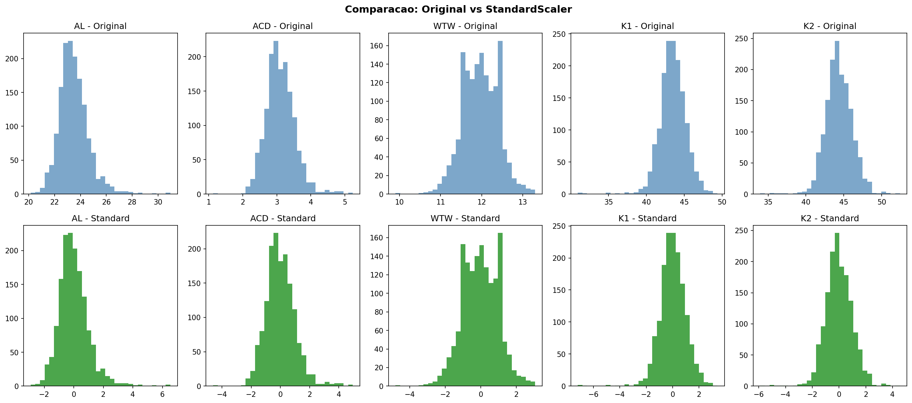

🔧 Preprocessamento
Metodos Aplicados
Metodo
Formula
Resultado
StandardScaler
z = (x - mean) / std
Media=0, Std=1
MinMaxScaler
x_norm = (x - min) / (max - min)
Range=[0,1]
Comparacao

Arquivos Salvos
scaler_standard.pkl - Modelo StandardScaler
X_standard.pkl - Dados padronizados
scaler_minmax.pkl - Modelo MinMaxScaler
X_minmax.pkl - Dados normalizados [0,1]